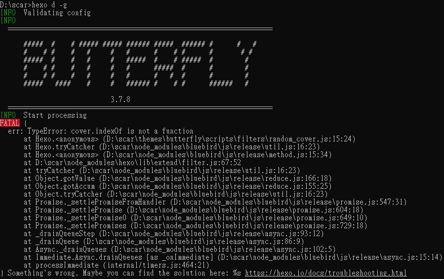

更新我的個人Blog遇到的問題
TypeError: cover.indexOf is not a function
7/21的時候，想說我又多寫一些文章，也有修改之前貼出來的文章，所以想要hexo cl(清除靜態網頁)完再hexo d -g(發布網頁)。但是當我要hexo d -g的時候，出現了如標題的這則訊息。

上網查了以後發現，這個錯誤會發生的原因是因為cover這個變數在被indexOf()使用之前，型別並不是string，因為indexOf()這個函式的功能是找出某字元在某字串 的位置，所以只要把cover轉成string就能解除這個錯誤。
Step 1
依據cmd給的錯誤訊息，找到random_cover.js。
Step 2
找到這行
1 | const cover = data.cover |
把它改成
1 | const cover = data.cover + "" |
這個動作可以將cover強制轉成string的型別，在JavaScript裡其實還有很多種轉成string的方式，這裡提供其中一種。
Step 3
問題解決，你又可以繼續發布任何東西到你架設的網站上了。
參考：
XXX.indexOf is not a function 问题本部落格所有文章除特別聲明外，均採用 CC BY-NC-SA 4.0 許可協議。轉載請註明來自 Scar's Blog！